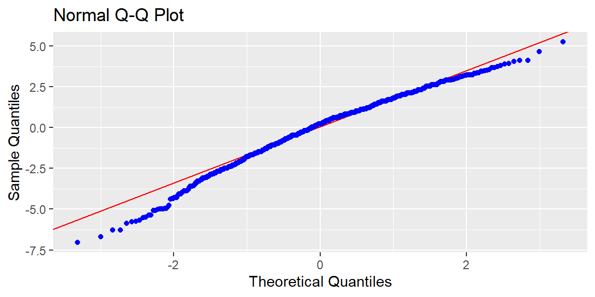
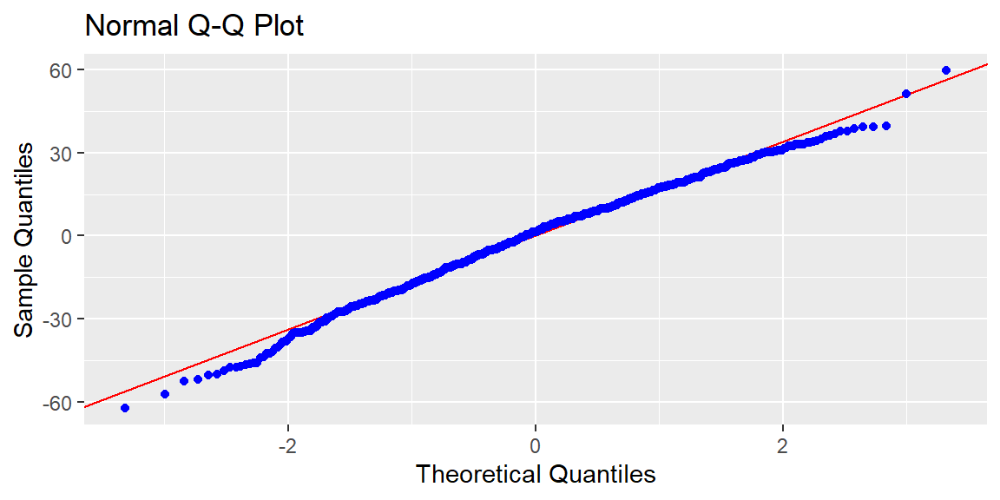
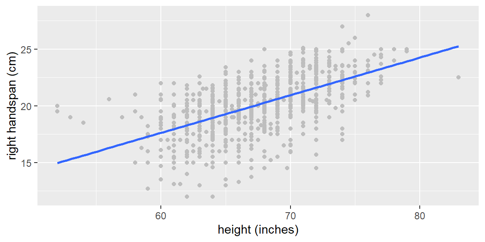
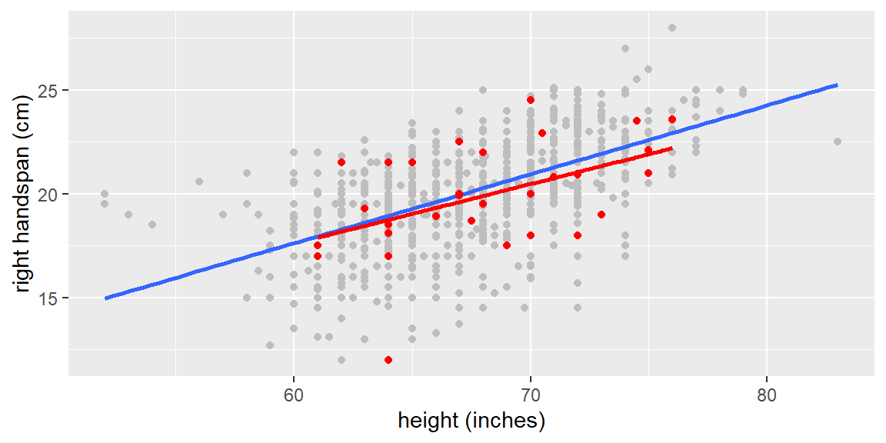
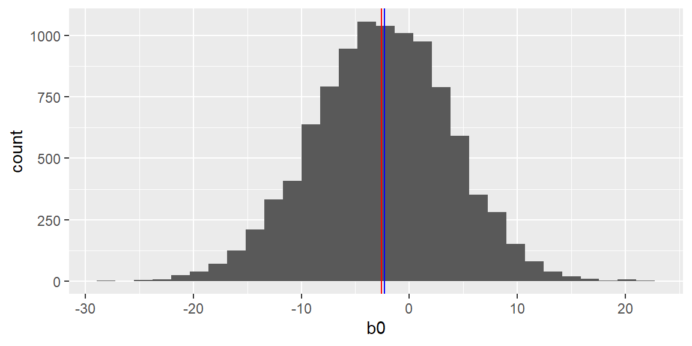
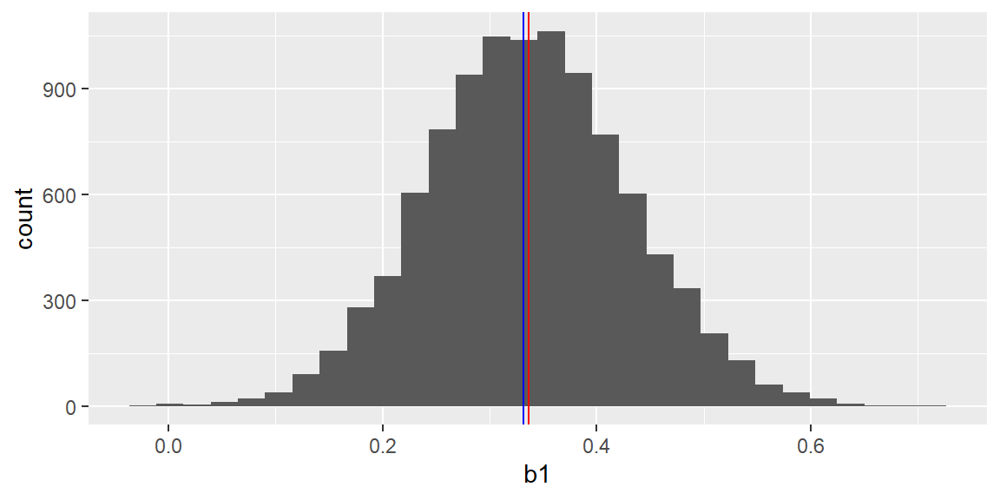
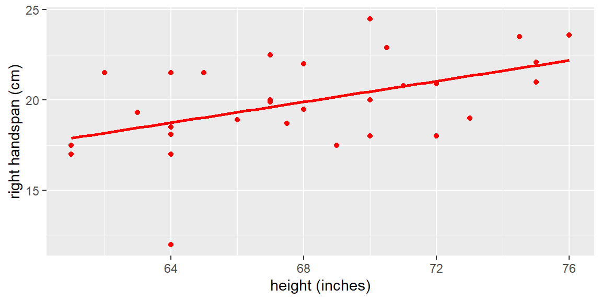
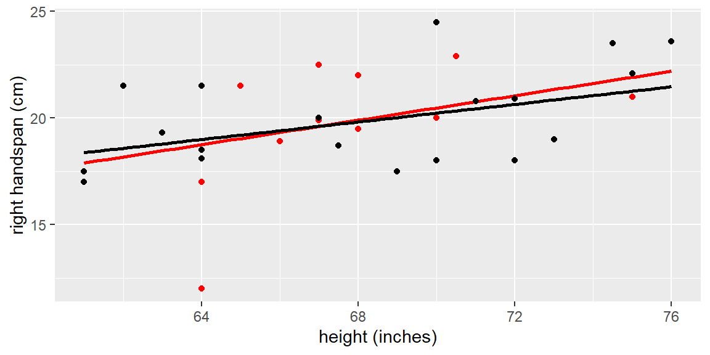
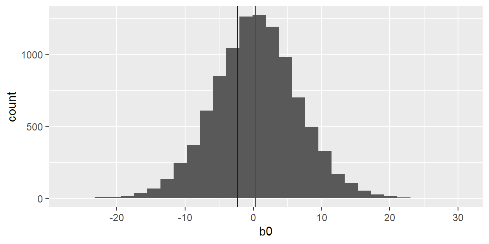
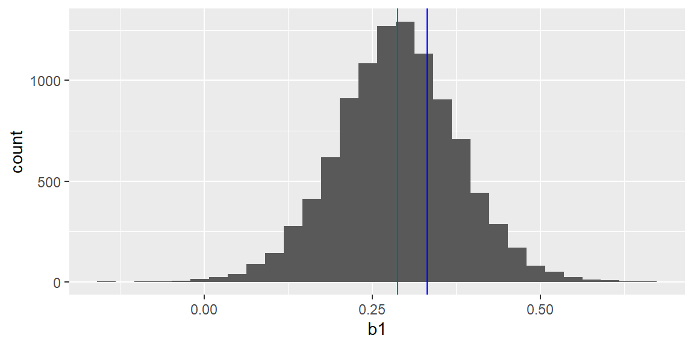

“And I knew exactly what to do. But in a much more real sense, I had no idea what to do.” - Michael Scott
We discussed checking the assumptions of a simple linear regression model in Chapter 7 and Chapter 8. For multiple regression, we have already discussed the linearity assumption in Chapter 16 and multicollinearity in Chapter 14. We will now revisit the remaining assumptions of the multiple regression model and present some remedial measures.
21.1 Assumptions for the Multiple Regression Model
For the normal errors multiple regression model in Equation 11.1 we need to check the assumptions.
We will use the residuals here as we did in simple regression.
Let’s begin by listing all of the assumptions for the model in Equation 11.1:
Linearity: There is a linear relationship between \(y\) and each of the predictor variables. (see Chapter 16)
Normality of the residuals: In the normal error model, the error terms should be approximately normally distributed.
Constant variance: The variance of the error terms should be constant throughout the range of the predictor variables.
Independence of the residuals: We assume the error terms are independent of each other.
Uncorrelated predictor variables: There is no multicollinearity present between the predictor variables (see Chapter 14).
NoteAssumptions are about the errors
The regression assumptions are technically about the unobserved errors, not the observed residuals. Since we cannot see the true errors, we use residuals as diagnostic evidence.
Residual plots and tests do not prove that assumptions are true. They help us decide whether the assumptions are reasonable enough for the model’s intended use.
21.2 Normality and Transformations
We can check normality as we did in simple regression by plotting the residuals in a QQ plot or by using the Shapiro Wilk test.
It is good practice to do both so that you can get a formal test and a visualization.
If the data are not normally distributed, then a transformation on \(y\), such as a Box-Cox transformation may be helpful.
21.2.1 Box-Cox Transformation
In the Box-Cox transformation, a procedure is used to determine a power (\(\lambda\)) of \(y\)\[
\begin{align*}
Y^\prime =& \frac{Y^\lambda - 1}{\lambda} &\text{ if }\lambda\ne 0\\
Y^\prime =& \ln Y & \text{ if }\lambda= 0
\end{align*}
\] that results in a regression fit with residuals as close to normality as possible.
In tidymodels, we can conduct a Box-Cox transformation using step_BoxCox in the recipe.
Example 21.1
ExampleBox-Cox transformation for handspan data
Let’s look at the handspan data first examined in Example 15.1.
library(tidyverse)library(tidymodels)library(olsrr)handspan_dat<-read_csv("SurveyMeasurements.csv")handspan_recipe<-recipe(`right handspan (cm)`~`height (inches)`+sex, data =handspan_dat)|>step_naomit()|>step_dummy(all_nominal_predictors())handspan_model<-linear_reg()|>set_engine("lm")handspan_workflow<-workflow()|>add_recipe(handspan_recipe)|>add_model(handspan_model)handspan_fit<-handspan_workflow|>fit(data =handspan_dat)handspan_fit|>extract_fit_engine()|>ols_plot_resid_qq()

handspan_boxcox_recipe<-recipe(`right handspan (cm)`~`height (inches)`+sex, data =handspan_dat)|>step_naomit()|>step_dummy(all_nominal_predictors())|>step_BoxCox(`right handspan (cm)`)handspan_boxcox_workflow<-workflow()|>add_recipe(handspan_boxcox_recipe)|>add_model(handspan_model)handspan_boxcox_fit<-handspan_boxcox_workflow|>fit(data =handspan_dat)handspan_boxcox_fit|>extract_fit_engine()|>ols_plot_resid_qq()

We see that the transformation dampened the skewness of residuals but they are still nonnormal. The Box-Cox transformation does not guarantee the result will be normal, but it attempts to make the residuals closer to normal.
If we would like to see the value of \(\lambda\) used in step_BoxCox, we can do so with the following:
# Use number = 3 since step_BoxCox is the third step in the recipe.prep(handspan_boxcox_recipe, training =handspan_dat)|>tidy(number =3)|>knitr::kable(digits =4)
terms
value
id
right handspan (cm)
1.7511
BoxCox_bczS9
ImportantTransformations change interpretation
A transformation can improve the behavior of the residuals, but it also changes the scale of the model. A model for \(\log(Y)\) is not interpreted the same way as a model for \(Y\).
Transformations are often helpful for prediction and model adequacy, but they can make confidence intervals, prediction intervals, and coefficient interpretations less direct.
One downside to transformations on \(y\) is that the interpretability on the confidence intervals may be difficult to grasp.
For example, if we have a confidence interval for the mean response where \(y\) was log-transformed as \((.35, .78)\), we could back transform by doing the inverse function of log which is the exponential function. So we would have \((\exp(.35), \exp(.78)=(1.419, 2.181)\). However, this is not a confidence interval for the mean \(y\), it is instead a confidence interval for the median \(y\).
Other back transformations may not have this interpretation. If the transformation is not monotonic, then the backtransformed confidence interval may not have the desired coverage.
Thus, a transformation may not be the best option if the goal is to obtain confidence and prediction intervals for the response.
21.2.2 Independence
We can visualize the correlation by using a acf plot.
A formal test for significant autocorrelation is the Breusch-Godfrey Test as was used in simple linear regression.
If significant autocorrelation is present, then a time series model is necessary (beyond the scope of this course).
21.2.3 Constant Variance
We can visualize the variance of the residuals as we did in simple regression. A plot of the residuals versus the fitted values can be examined for the “cone” or “megaphone” shape.
We can also use the Breusch-Pagan test as we did in simple regression to formally test for nonconstant variance.
21.3 Remedial Measures
21.3.1 Overview of Assumptions and Remedial Measures
We will list again the assumptions of model Equation 11.1 and also discuss the problems violations of these assumptions present and what can be done when they are violated.
Linearity: Violating linearity will lead to incorrect conclusions about the relationship between \(y\) and the predictor variables and thus lead to incorrect estimations and predictions.
As discussed previously, a transformation on the \(x\) variables can help with linearity.
Normality of the residuals: The t-test, F-test, confidence intervals, and prediction intervals all depend on normality of the residuals (or at least symmetric distribution).
If we do not have normality, then we cannot do the inferences for the model. A transformation on \(y\) may help with normality (or at least get to a symmetric distribution), however, we tend to lose interpretation in our inferences.
If we cannot obtain normality through a transformation, or we wish to keep interpretation and not do a transformation, then we can still do inferences based on bootstrapping. We will discuss bootstrapping in more detail below.
Constant variance: Very much like the normality assumption, the constant variance assumption affects the inferences made for the model. Recall all the equations for the variance of the estimated coefficients (Equation 13.3), the variance of the mean response (Equation 13.10), and the variance of the prediction (Equation 13.13). Each involves MSE which is an estimate of the constant variance \(\sigma^2\). If \(\sigma^2\) is not constant, then MSE is not the estimator we need. We would need an estimator that takes into account the nonconstant variance.
Taking a transformation of \(y\) could help stabilize the variance, however, we would lose interpretation due to the transformation. Using a method known as weighted least squares (discussed below) can help with nonconstant variance.
Independence of the residuals: If there is significant autocorrelation in the residuals, then a time series model will be needed.
In simple regression, we discussed that a difference could be used to remove simple autocorrelation (see Chapter 8). The downside to doing a difference is that, once again, you lose interpretation in your inferences.
Uncorrelated predictor variables: Previously, we discussed the problems of having highly correlated predictor variables which is known as multicollinearity.
In some applications, it is very difficult to have a subset of predictor variables that do not have multicollinearity. When this is the case, we can use ridge regression or lasso.
TipDiagnostic decision table
The table below summarizes common diagnostic evidence and possible remedial measures.
Assumption concern
Diagnostic evidence
Possible remedial measure
Linearity
Curved pattern in residual plots or component-plus-residual plots
Transform one or more predictors; add polynomial or interaction terms
Normality
Strong departures from a straight line in a QQ plot; small Shapiro-Wilk p-value
Transform \(y\); use bootstrap inference if interpretation on the original scale is important
Constant variance
Cone or megaphone shape in residuals versus fitted values; small Breusch-Pagan p-value
Transform \(y\); use weighted least squares; use robust standard errors for inference
Independence
Autocorrelation in residuals; significant Breusch-Godfrey test
Use a time-series or correlated-error model
Multicollinearity
Large VIFs; unstable coefficient estimates
Remove or combine predictors; use ridge regression or lasso
The remedy should match the problem. For example, weighted least squares addresses nonconstant variance, but it does not fix a nonlinear mean relationship.
21.3.2 Bootstrap Sampling
Repeated Sampling
If we were to repeatedly take a sample of size \(n\) from the population of interest and then find the least squares estimates each time, we could plot these estimates to estimate their sampling distributions. This is known as repeated sampling.
For example, let’s consider the handspan and height measurements from Example 15.1. These measurements were from 1102 college students. Suppose these students are now the population of interest.
We will take a random sample of \(n=30\) from this population of 1102 college students. We could look at all possible samples of size \(n=30\) and the resulting least squares estimates \(b_0\) and \(b_1\). This would give us the exact sampling distribution for each. In this example with a relatively small population size of 1102, the number of possible samples of size 30 is \[
\begin{align*}
\binom{1102}{30} & =4.6645012\times 10^{58}
\end{align*}
\]
It would be infeasible to examine this many samples, however, we could look at enough samples (tens of thousands) to get an estimate of the sampling distributions.
Let’s first get a scatterplot all 1102 population measurements. They are colored gray. The least squares line for the entire population is shown in blue.
handspan_population<-read_csv("SurveyMeasurements.csv")population_plot<-handspan_population|>ggplot(aes(x =`height (inches)`, y =`right handspan (cm)`))+geom_point(color ="gray")+geom_smooth(method ="lm", se =FALSE)population_plot

Let’s now take a random sample of size \(n=30\). This sample will be shown as red points in the scatterplot below. The red line represents the fitted line for the sample.
set.seed(34)# to replicate resultshandspan_sample<-slice_sample(handspan_population, n =30)handspan_sample_fit<-lm(`right handspan (cm)`~`height (inches)`, data =handspan_sample)population_plot+geom_point(data =handspan_sample, color ="red")+geom_smooth(data =handspan_sample, method ="lm", se =FALSE, color ="red")

The sample in the figure above is just one sample of size \(n=30\). Suppose we repeated this sampling and got a total of 10,000 samples of size \(n=30\) from the data. Each time, we fit the least squares line to the sample and save the y-intercept (\(b_0\)) and slope (\(b_1\)).
The plots below show the histograms of the least squares estimates \(b_0\) and \(b_1\) from the repeated sampling. The blue and red vertical lines in the histograms represent the population parameters and the mean of the estimates, respectively.
handspan_population_fit<-lm(`right handspan (cm)`~`height (inches)`, data =handspan_population)repeated_sampling_results<-data.frame(b0 =numeric(10000), b1 =numeric(10000))for(iin1:nrow(repeated_sampling_results)){repeated_sample<-slice_sample(handspan_population, n =30)repeated_fit<-lm(`right handspan (cm)`~`height (inches)`, data =repeated_sample)repeated_sampling_results[i, 1]<-repeated_fit$coefficients[1]repeated_sampling_results[i, 2]<-repeated_fit$coefficients[2]}repeated_sampling_results|>ggplot(aes(x =b0))+geom_histogram()+geom_vline(xintercept =handspan_population_fit$coefficients[1], color ="blue")+geom_vline(xintercept =mean(repeated_sampling_results[, 1]), color ="red")

repeated_sampling_results|>ggplot(aes(x =b1))+geom_histogram()+geom_vline(xintercept =handspan_population_fit$coefficients[2], color ="blue")+geom_vline(xintercept =mean(repeated_sampling_results[, 2]), color ="red")

The equation of the population line is \[
y_i=-2.2859674+0.3318128 x_i
\]
The equation for the line for the first sample is \[
\hat{y}_i=0.353943+0.2874696 x_i
\]
Examining the histograms, we see the mean of all 10,000 \(b_0\)’s is -2.6025954 and the mean of all 10,000 \(b_1\)’s is 0.3363284.
We can get a good estimate of the sampling distributions by examining just ten thousand samples. The downside to using repeated sampling is that we usually only have one sample. Thus, we need a different approach that will allow us to estimate the sampling distributions with just the information in our one sample. We will explore one way to do this next.
21.3.3 Bootstrap
Bootstrapping is a method for estimating the sampling distribution of a statistic based on the observations of one sample.
This estimation is done by sampling with replacement of size \(n\) from the observed data. For each of these “bootstrap” samples, the estimator, both \(\hat{\beta}_0\) and \(\hat{\beta}_1\) in this case, is computed. This is done many times (usually thousands) so that the resulting distribution of these bootstrapped statistics provides an estimate for the sampling distribution of the statistic.
NoteWhat the bootstrap is estimating
The bootstrap treats the observed sample as a stand-in for the population. Each bootstrap sample is created by sampling from the observed data with replacement.
Because the bootstrap only uses the information in the original sample, bootstrap distributions are centered around the estimates from the sample, not necessarily around the true population parameters.
Suppose we only had a sample of size \(n=30\) from the handspan and height data. This sample is plotted below with the least squares line (both in red).
handspan_bootstrap_sample<-slice_sample(handspan_sample, n =30, replace =TRUE)sample_plot<-handspan_sample|>ggplot(aes(x =`height (inches)`, y =`right handspan (cm)`))+geom_point(color ="red")+geom_smooth(method ="lm", se =FALSE, color ="red")sample_plot

A sample of size \(n=30\) is taken from the red dots, with replacement. This bootstrapped sample are the black dots in the plot below. Note that some of the observations can be selected more than once due to sampling with replacement. This is why some of the points are still red.
handspan_bootstrap_sample<-slice_sample(handspan_sample, n =30, replace =TRUE)sample_plot+geom_point(data =handspan_bootstrap_sample, color ="black")+geom_smooth( data =handspan_bootstrap_sample, method ="lm", se =FALSE, color ="black")

The equation of the line for the sample (the red line in the plot above) is \[
\hat{y}_i=0.353943+0.2874696 x_i
\]
The equation for the line for the first bootstrap sample (the black line in the figure above) is \[
\hat{y}_i=5.7948976+0.2062484 x_i
\]
The \(b_0\)’s and \(b_1\)’s for 10,000 bootstrap samples are plotted in the histograms in the figure below.
bootstrap_results<-data.frame(b0 =numeric(10000), b1 =numeric(10000))for(iin1:nrow(bootstrap_results)){current_bootstrap_sample<-slice_sample(handspan_sample, n =30, replace =TRUE)current_bootstrap_fit<-lm(`right handspan (cm)`~`height (inches)`, data =current_bootstrap_sample)bootstrap_results[i, 1]<-current_bootstrap_fit$coefficients[1]bootstrap_results[i, 2]<-current_bootstrap_fit$coefficients[2]}bootstrap_results|>ggplot(aes(x =b0))+geom_histogram()+geom_vline(xintercept =handspan_population_fit$coefficients[1], color ="blue")+geom_vline(xintercept =handspan_sample_fit$coefficients[1], color ="red")

bootstrap_results|>ggplot(aes(x =b1))+geom_histogram()+geom_vline(xintercept =handspan_population_fit$coefficients[2], color ="blue")+geom_vline(xintercept =handspan_sample_fit$coefficients[2], color ="red")

Examining the histograms, we see the mean of all 10,000 \(b_0\)’s is 0.3894754 and the mean of all 10,000 \(b_1\)’s is 0.2869148.
After generating 10,000 bootstrap estimates, we can get a good estimate of the sampling distributions of \(b_0\) and \(b_1\). Note, however, how these estimated distributions are centered at the least squares estimates of the observed sample (the red vertical lines) and not at the true population values (the blue vertical lines).
21.3.4 Bootstrap Intervals
We just discussed how to bootstrap the observations in order to estimate the sampling distributions for \(b_0\) and \(b_1\).
Based on the normality assumption, we could determine the sampling distributions for the coefficients theoretically without need to bootstrap.
When the normality assumption does not hold, then we can use the bootstrap to estimate the sampling distributions of the coefficients and for the mean response. We could also use it for the distribution of the predicted values.
Thus, we can still obtain confidence intervals for the coefficients, confidence intervals for the mean response, and prediction intervals even when normality does not hold.
Fixed Sampling vs Random Sampling
How the bootstrap works in regression is determined by the assumptions that hold for our model.
If the model is a good model for our data, the variance \(\sigma^2\) is constant, and the predictor variables are regarded as fixed, then we use fixed \(x\) sampling.
In fixed \(x\) sampling, the regression is fitted on the sample data and the fitted values, \(\hat{y}_i\), and the residuals, \(e_i\) are obtained. A bootstrap sample of size \(n\) are then obtained from the residuals which are denoted \(e^*_i\). The bootstrap \(y\) values are found as \[
\begin{align}
y^*_i = \hat{y}_i +e^*_i
\end{align}
\tag{21.1}\]
These bootstrapped \(y_i^*\) are regressed on the original predictor variables. This procedure is done a large number of times and the resulting distributions of the coefficients \(\hat{\beta}^*_i\) and fitted values \(\hat{y}^*_i\) can be used as estimates of the corresponding sampling distributions.
If there is doubt in adequacy of the model, the variance \(\sigma^2\) is not constant, and/or the predictor variables cannot be regarded as fixed, then we use random \(x\) sampling.
In random \(x\) sampling, the observations (including \(y\) and the predictor variables) are bootstrapped and then the resulting bootstrapped sample is used to fit the model.
NoteFixed-x and random-x bootstrapping answer different questions
Fixed-\(x\) bootstrapping keeps the predictor values fixed and resamples residuals. It is most natural when the model form is trusted and the predictor values are treated as fixed by design.
Random-\(x\) bootstrapping resamples whole rows of data. It is often easier to implement and is useful when the observations are viewed as a random sample from a larger population.
Example 21.2
ExampleFixed-x bootstrap for the handspan data
The repeated-sampling and bootstrap examples above used the handspan data to study the intercept and slope in a simple regression model. We can also use a fixed-\(x\) bootstrap by keeping the observed heights fixed and resampling the residuals from the fitted model.
This procedure keeps the same predictor values in every bootstrap sample. What changes from sample to sample is the residual noise added back to the fitted regression line.
Example 21.3
ExampleRandom-x bootstrap coefficient intervals for the fitness data
We will examine the fitness dataset from the olsrr library.
In this dataset, we want to predict the oxygen level of the participants based on six predictor variables.
fitness_dat<-fitnessfitness_recipe<-recipe(oxygen~., data =fitness_dat)fitness_model<-linear_reg()|>set_engine("lm")fitness_workflow<-workflow()|>add_recipe(fitness_recipe)|>add_model(fitness_model)set.seed(1004)# Create bootstrap samples.fitness_bootstraps<-bootstraps(fitness_dat, times =500)# Fit the model to each bootstrap sample.fitness_boot_results<-fitness_bootstraps|>mutate( fitted_workflow =map(splits, ~fit(fitness_workflow, data =analysis(.x))), coefficients =map(fitted_workflow, ~tidy(extract_fit_parsnip(.x))))# Extract and calculate percentile intervals for coefficients.fitness_coefficients<-bind_rows(fitness_boot_results$coefficients)fitness_bootstrap_intervals<-fitness_coefficients|>group_by(term)%>%summarize( bootstrap_mean =mean(estimate), lower =quantile(estimate, 0.025), upper =quantile(estimate, 0.975), .groups ="drop")fitness_bootstrap_intervals|>knitr::kable(digits =4)
term
bootstrap_mean
lower
upper
(Intercept)
101.8882
75.8816
121.3965
age
-0.2199
-0.4575
-0.0061
maxpulse
0.2712
-0.0198
0.5415
restpulse
-0.0210
-0.1735
0.1101
runpulse
-0.3410
-0.5721
-0.0909
runtime
-2.5936
-3.2501
-1.8799
weight
-0.0619
-0.1712
0.0576
The interval endpoints above are percentile bootstrap intervals. In a full analysis, we would typically use more than 500 bootstrap samples, but 500 is enough to demonstrate the workflow without making the example too slow to render.
21.3.5 Weighted Least Squares
Sometimes a transformation on \(y\), such as a log transformation, can help stabilize nonconstant variance. However, if the linearity assumption between \(y\) and the predictor variables seems reasonable, then transforming \(y\) may violate the linearity assumption.
If we cannot transform \(y\), we can adjust model Equation 11.1 so that the variance term is allowed to vary for different observations. Thus, we will have \[
\begin{align}
{\textbf{Y}}= & {\textbf{X}}{\boldsymbol{\beta}}+{\boldsymbol{\varepsilon}}\\
& \boldsymbol{\varepsilon} \overset{iid}{\sim} N\left(0,\sigma_i^{2}\right)
\end{align}
\tag{21.2}\]
The least squares estimators Equation 11.4 could still be used. These estimators are unbiased but they no longer have minimum variance. That is, they are no longer the BLUEs.
To obtain unbiased estimators with minimum variance, we must take into account the different variances for the different \(y\) observations. Observations with small variances provide more reliable information about the regression function than those with large variances.
Therefore, we will want to weight the observations on the fit based on the variances of the observations.
21.3.6 WLS Estimators
If the variances \(\sigma_{i}^{2}\) are known, we can specify the weights as \[
\begin{align}
w_{i} & =\frac{1}{\sigma_{i}^{2}}
\end{align}
\tag{21.3}\]
NoteLarger weights mean more precise observations
Weighted least squares uses larger weights for observations with smaller error variance. If an observation has a large variance, then it is noisier and receives less weight in the fit.
The ideal weight is proportional to the inverse of the variance: \(w_i = 1/\sigma_i^2\).
These weights can be included in the least squares estimators as \[
\begin{align}
{\bf b}_{w} & =\left({\bf X}^{\prime}{\bf W}{\bf X}\right)^{-1}{\bf X}^{\prime}{\bf W}{\bf Y}
\end{align}
\tag{21.5}\]
The estimated covariance matrix of the weighted least squares (wls) estimators is \[
\begin{align}
{\bf s}^{2}\left[{\bf b}_{w}\right] & =\left({\bf X}^{\prime}{\bf W}{\bf X}\right)^{-1}
\end{align}
\tag{21.6}\]
Compare this to the estimated covariance matrix for the ordinary (un-weighted) least squares (ols) estimators in Equation 13.3. Instead of using MSE for an estimate of \(\sigma^{2}\), Equation 21.6 uses the weight matrix which takes into account how the variance changes for different observations.
21.3.7 The Variance and Standard Deviation Functions
For the WLS estimators in Equation 21.6, it is fairly straightforward if the variances \(\sigma^2_i\) are known. In practice, these variances will be unknown and need to be estimated.
Most of the time, the variance will vary in some systematic pattern. For example, the cone shape.
We can estimate a pattern like this by first fitting the model without any weights. We then examine the absolute values of the residuals vs the fitted values. We can regress these absolute residuals on the fitted values. This fitted model will be an estimate of the standard deviation function. Squaring these fitted values gives us an estimate of the variance function. The reciprocal of this variance function provides an estimate of the weights.
Other systematic patterns in the residual plots may require other ways to obtain an estimated variance function.
For example, if the plot of the residuals against \(x_2\) suggests that the variance increases rapidly with increases in \(x_2\) up to a point and then increases more slowly, then we should regress the absolute residuals against \(x_2\) and \(x_2^2\).
If the WLS estimates differ greatly from the OLS estimates, it is common to take the squared or absolute residuals from the WLS fit and then re-estimate the variance function. This is done again until the changes in the estimates become small between iterations.
This is known as iteratively reweighted least squares (IRLS).
Example 21.4
ExampleWeighted least squares for blood pressure data
Let’s revisit the blood pressure data used in Example 7.2.
Let’s first fit a regression model using typical ordinary least squares.
bloodpressure_dat<-read.table("bloodpressure.txt", header =TRUE)bloodpressure_recipe<-recipe(dbp~age, data =bloodpressure_dat)bloodpressure_model<-linear_reg()|>set_engine("lm")bloodpressure_workflow<-workflow()|>add_recipe(bloodpressure_recipe)|>add_model(bloodpressure_model)bloodpressure_ols_fit<-bloodpressure_workflow|>fit(data =bloodpressure_dat)bloodpressure_ols_fit|>tidy()|>knitr::kable(digits =4)
We see clear evidence of heteroscedasticity. Let’s now use weighted least squares. We must first determine the weights. The absolute value of the residuals of the OLS fit is regressed on the fitted values of the OLS fit. The fitted values of this fit are then used to determine the weights.
# Fit absolute residuals against fitted values.bloodpressure_ols_results<-bloodpressure_ols_fit|>extract_fit_engine()|>augment()bloodpressure_sd_fit<-lm(abs(.resid)~.fitted, data =bloodpressure_ols_results)# The fitted values estimate the standard deviation function.bloodpressure_weights<-1/(fitted.values(bloodpressure_sd_fit)^2)
We can now add these weights to the workflow. We first specify that these are weights by adding it to the dataframe using importance_weights.
Note the difference between the estimates for the weighted least squares and the estimates for the ordinary least squares. When the constant-variance assumption is not reasonable, the WLS fit can provide more appropriate standard errors and inference than the OLS fit.
After fitting a WLS model, we should check the residual plot again. The goal is to see whether the nonconstant variance pattern has been reduced.
The WLS residual plot should show less of the original cone-shaped pattern. If a strong pattern remains, the weights may need to be improved, or another remedial measure may be needed.
NoteRobust standard errors
Weighted least squares changes the fitted model by giving different observations different weights. Another approach is to keep the OLS coefficient estimates but adjust the standard errors to be more reliable when the variance is not constant. These are often called heteroscedasticity-consistent or robust standard errors.
Robust standard errors are useful when the mean model is reasonable but the constant-variance assumption is questionable. They mainly change inference, such as t-tests and confidence intervals. They do not remove a pattern from the residual plot, and they do not change the fitted values.
21.4 Recap
In this chapter, we revisited residual diagnostics for multiple regression and introduced remedial measures for assumption violations.
Idea
Meaning
Residual diagnostics
Residuals are used as observable evidence about the unobserved model errors.
Diagnostic decision table
Connects an assumption concern to diagnostic evidence and an appropriate remedial measure.
Normality
QQ plots and tests such as Shapiro-Wilk help assess whether residuals are approximately normal.
Box-Cox transformation
A power transformation of the response that attempts to make residuals closer to normal.
Transformation tradeoff
Transforming \(y\) may improve residual behavior but can make interpretation less direct.
Independence
Residuals should not be correlated with each other; autocorrelation usually requires time-series methods.
Constant variance
The spread of residuals should be roughly the same across fitted values and predictors.
Bootstrap
A resampling method for approximating the sampling distribution of a statistic from one observed sample.
Repeated sampling
The ideal process of repeatedly sampling from the population; usually impossible in practice.
Random-x bootstrap
Resamples whole rows of data, including both response and predictors.
Fixed-x bootstrap
Keeps predictor values fixed and resamples residuals to create new responses.
Weighted least squares
Gives more weight to observations with smaller variance and less weight to noisier observations.
Post-WLS diagnostics
Residual plots should be checked again after WLS to see whether the nonconstant variance pattern improved.
Robust standard errors
Adjust standard errors for nonconstant variance while leaving the OLS fitted values unchanged.
IRLS
Iteratively reweighted least squares repeatedly updates weights until estimates stabilize.
21.5 Check your understanding
NoteProblems
Why do we use residuals to check assumptions if the assumptions are technically about errors?
What does a QQ plot help us assess?
Why might a Box-Cox transformation help with residual normality?
Why can transforming the response variable make interpretation harder?
What assumption is being checked when we look for autocorrelation in the residuals?
What pattern in a residual-versus-fitted plot suggests nonconstant variance?
Why is repeated sampling usually not possible in practice?
What is the basic idea of bootstrapping?
Why are bootstrap distributions centered around the sample estimate rather than the true population parameter?
What is the difference between fixed-\(x\) and random-\(x\) bootstrapping?
Why does weighted least squares give smaller weights to observations with larger variance?
When might weighted least squares be preferred over transforming the response?
Why is it helpful to connect each assumption violation to a specific diagnostic and remedy?
In a fixed-\(x\) bootstrap, what stays fixed and what is resampled?
Why should we examine residual plots again after fitting a weighted least squares model?
How are robust standard errors different from weighted least squares?
TipSolutions
The true errors are unobserved. Residuals are the observable differences between the observed responses and fitted values, so they are our best diagnostic evidence about the errors.
It helps assess normality. If residuals are approximately normal, the points in a QQ plot should roughly follow a straight line.
It searches for a response scale with more normal residuals. Box-Cox transformations try different powers of \(Y\) and choose a power that improves the residual pattern.
The model is no longer on the original response scale. Coefficients, confidence intervals, and prediction intervals may need back-transformation, and the back-transformed interpretation is not always simple.
The independence assumption. Autocorrelation means residuals are related across order or time, which violates independence.
A cone or megaphone shape. If residual spread increases or decreases with the fitted values, the constant-variance assumption is questionable.
We usually only have one sample. Repeated sampling would require repeatedly collecting new samples from the population, which is rarely feasible.
Resample from the observed data many times. Each bootstrap sample produces a statistic, and the distribution of those statistics estimates sampling variability.
The bootstrap treats the observed sample as the population stand-in. Since it resamples from the sample, the bootstrap distribution naturally centers around the statistic computed from that sample.
Fixed-\(x\) resamples residuals; random-\(x\) resamples rows. Fixed-\(x\) keeps predictor values fixed, while random-\(x\) resamples the response and predictors together.
Larger variance means less reliable information. WLS uses weights proportional to \(1/\sigma_i^2\), so noisier observations receive less influence in the fit.
When the mean relationship is already reasonable on the original scale. WLS can address nonconstant variance while keeping the response variable on its original, more interpretable scale.
Different problems require different fixes. For example, WLS may help with nonconstant variance, but it does not fix a nonlinear relationship. Matching the remedy to the diagnostic evidence avoids treating residual analysis like a generic checklist.
The predictor values stay fixed, and the residuals are resampled. The resampled residuals are added back to the fitted values to create new bootstrap responses.
The remedy should be checked. A WLS fit is intended to reduce the nonconstant variance pattern. A post-WLS residual plot helps determine whether the weighting strategy actually improved the residual behavior.
Robust standard errors adjust inference, while WLS changes the fit. Robust standard errors keep the OLS coefficient estimates and fitted values but change the estimated standard errors. WLS changes the model fit by weighting observations differently.